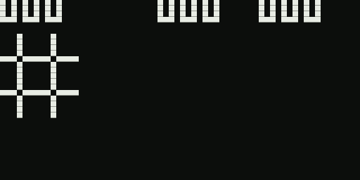
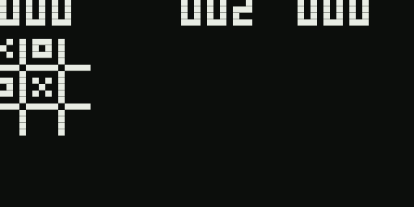
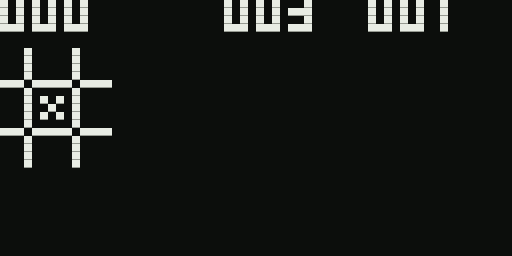

Compucrosses
K. Bolch · DREAMER no. 11 (1981-07) p. 14 1K RAM



Noughts and crosses against the DREAM, with the cells numbered 1 to 9. Three scores are shown at the top. A key pressed while the computer is thinking is lost.
Keys
1-9 pick the cell (you are O).
Files
| File | Version | Load | Run |
|---|---|---|---|
| Compucrosses.d68 | main | 0080-03FF | C000 |
Listing as transcribed (with notes): compucrosses.txt
Source
DREAMER no. 11 on archive.org, p. 14 (PDF page 16). Author: K. Bolch.
Corrections applied
- No code change: the article says left = computer, middle = draws, but the issue 15 erratum (D. Chaves) says left = you, middle = computer, right = draws; the simulation confirms the erratum.
Open doubts
None.